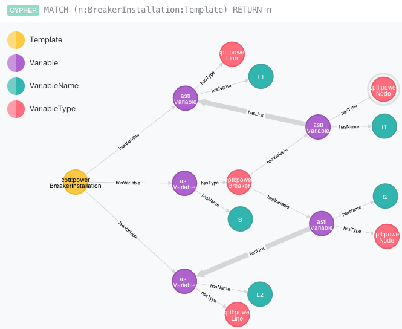
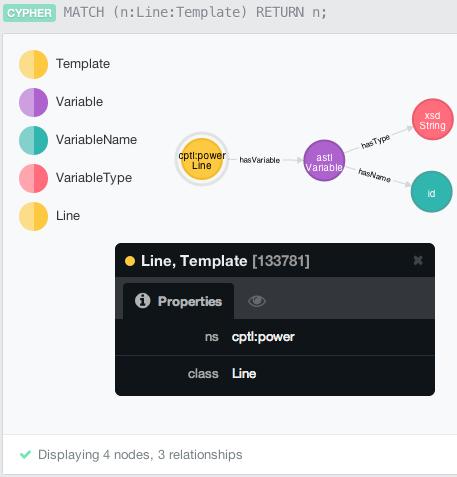
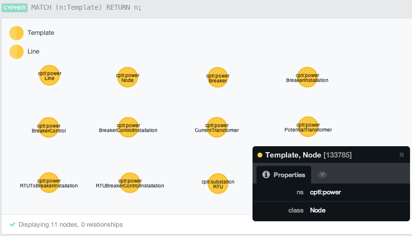
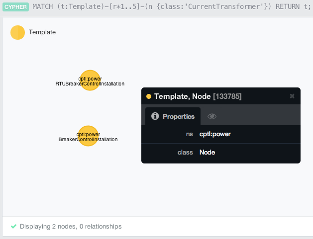
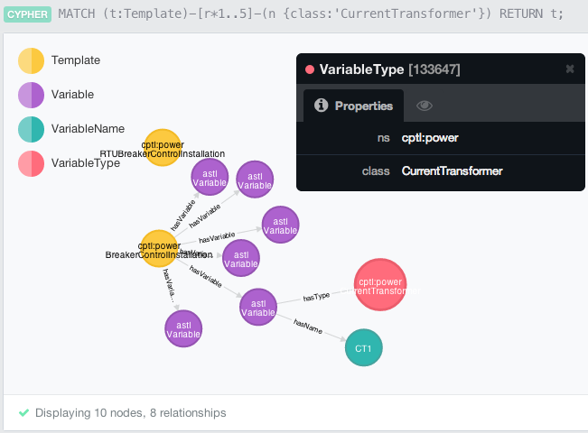
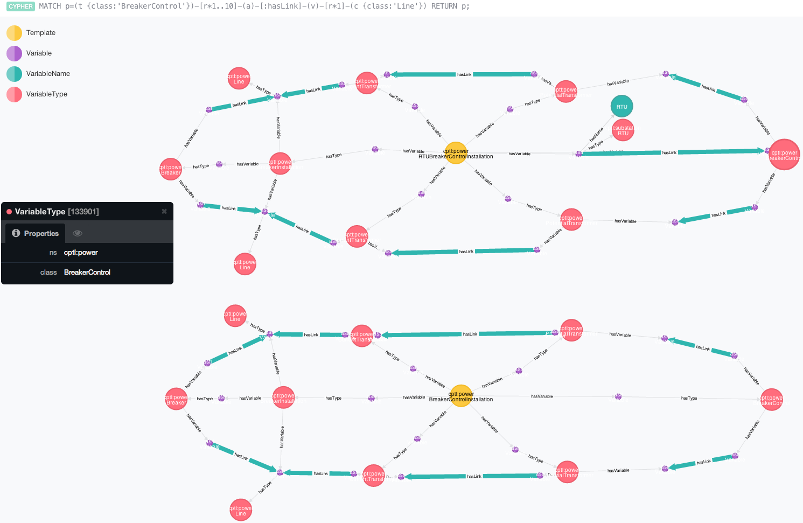

Querying Cyber-Physical Constructs within a Graph Database
We now want to discuss how to query the cyber-physical constructs defined within our CPTL catalog. Currently, this is a two-step transformation process. First, we convert the GraphML schematic into an intermediate Abstract Syntax Language (ASL) that captures relations that are implicit in the schematic. (We note that although some of the representations aren't really trees if we include the CPTL relations such ashasLink, they are trees when we only look at ASL relations such as hasVariable, hasType, and hasName). Second, we convert the ASL construct into a Neo4j Cypher CREATE statement. We now discuss both components of this process.
Converting Schematics into ASL
The schematics from our catalog encode implicit relations that we may want to query. Consider, for example, the breaker installation schematic shown below.

More detailed of the Breaker installation schematic.
Although the schematic visually shows us that a Breaker Installation construct consists of a Breaker attached to two lines, there is an implicit relation, denoted by containment that a Breaker installation has three variables: Line L1, Line L2, and Breaker B. Our ASL captures these implicit relations within the schematic that are encoded by containment. Consider, for example, the corresponding ASL representation for the Breaker installation shown above.

The ASL representation of the Breaker installation data model.
Specifically, we see that the breaker installation (shown at the far left) has three variables which have the names L1, B, and L2 and types of Line, Breaker, and Line respectively. Furthermore, the CPTL relation hasLink is also encoded within the ASL representation of the construction.
Practically, we can convert the construct schematics into their corresponding ASL representations by using the schematic2asl Makefile task.
Loading Constructs into the GraphDB
After we have the ASL GraphML representation of the constructs, we can convert them into a Neo4j Cypher CREATE query. For example, we convert the ASL above into the following Neo4j Cypher CREATE statement for a Breaker Installation. The figure below shows what this structure looks like in the Neo4j browser.

View of the Breaker Installation construct within the Neo4j browser.
Practically, we can convert the ASL constructs into their corresponding Cypher CREATE statements via the asl2neo4j Makefile task. Once we have done this, we can copy each of these statements into the Neo4j browser (usually running on localhost:7474) to populate the graph database.
Example Queries
Once we have loaded the constructs into the graph database, we are free to run queries on the structures therein. We will now walk through a few example queries.
Retrieve Construct Templates

Query to retrieve the Line template from the database.

Query to retrieve all CPTL templates from the database.

Query to retrieve all CPTL templates that contain a Current Transformer.

Drill-down within result set for query to retrieve all CPTL templates that contain a Current Transformer.

Return all paths of length at most 10 hops from a breaker control to a line within the ASL. We see that the BreakerControlInstallation and RTUBreakerControlInstallation templates contain such paths.
Page last modified: March 19, 2014
CPTL: always work in progress packaged on March 19, 2014. Edited by and copyright 2013-2014 Gabriel A. Weaver except where otherwise noted.

CPTL Power Documentation is licensed under a Creative Commons Attribution-NonCommercial-ShareAlike 4.0 International License (With that said, we are amenable to commercialization).
This site includes material that has not been reviewed or approved by anyone at University of Illinois at Urbana-Champaign.